Vellore Institute of Technology, Chennai
{{course}}
{{projectTitle}}
Final Project Report
| Course | {{course}} |
|---|---|
| Slot | {{slot}} |
| Faculty | {{faculty}} |
| Team member 1 | {{member1}} |
| Team member 2 | {{member2}} |
| Live application | {{liveUrl}} |
| GitHub repository | {{githubUrl}} |
Select a section to go to it.
Women's health tools are usually single-purpose: one app for periods, another for food, another for sleep or exercise. None of them looks across the data a person already records, most assume one fixed cycle length, and almost all are designed for a young, confident phone user. Women360 is a cloud-native SaaS platform that brings menstrual health, nutrition, activity, sleep, mental wellbeing, physical health measurements, medicines, goals and habits into one responsive web application for women from 18 to 100 and beyond.
Its primary goal is preventive care: it turns what a woman logs into early, non-diagnostic prompts, including a screening schedule based on India's national programme and WHO guidance, and observations drawn from her own baseline rather than from population averages. Its second requirement is ease of use: one-tap logging, templates and sensible defaults, and a Senior Mode that replaces the dashboard with a handful of large, plain-language tiles.
The system has three roles (Woman, Wellness Coach, Admin), each with its own web area and enforced on the server. It is a React 18 + TypeScript single-page application hosted on Vercel, talking over HTTPS to a Node.js/Express REST API (about 110 endpoints) hosted on Render, which stores data in a managed PostgreSQL database on Supabase through the Prisma ORM. Source control, automated checks and deployment are driven from GitHub. The application is live at the URL above.
Women360 started as the BCSE408L Cloud Computing project and has been built as a real product rather than a coursework demonstration. The Software Requirements Specification (SRS) fixes the scope: secure registration and login, role-based access, profile management, health and wellness tracking with full CRUD, dashboards and reports, notifications, a cloud database, REST APIs, and public deployment on a cloud platform. The project must demonstrate cloud concepts, and is not considered complete if it runs only on localhost.
The product is deliberately a wellness, tracking and decision-support application. It does not diagnose, prescribe, or present a screening schedule as a clinical instruction (SRS §12).
Existing consumer apps fall into separate categories: cycle trackers, calorie counters, sleep trackers, fitness apps, meditation apps and medication reminders. Each treats its own metric in isolation and has a recognised weakness:
| Approach | Limitation addressed by Women360 |
|---|---|
| Cycle trackers | Single-date predictions from a fixed formula; weak for irregular cycles and perimenopause; fertile-window estimates easily misread as contraception. |
| Calorie / nutrition apps | Every entry needs a full form; red/green feedback and streaks; no link to how the person feels or sleeps. |
| Sleep apps | A single score can make people anxious about a number and contradict how they actually feel. |
| Medication reminders | Reminders without any view of adherence over time or its link to wellbeing. |
| Generic health dashboards | Not designed for older users; no preventive-care schedule; limited control over data export or deletion. |
Women360 is a single cloud-hosted application with a stateless REST API and a managed database. Its main advantages:
| Role | Needs (from SRS §2.3 and §7) |
|---|---|
| Woman | Register and log in; manage her profile; create, view, edit and delete her own records; see dashboards, trends and reports; manage goals; receive reminders; control coach access. |
| Wellness Coach | Authenticate; see only the information a woman has authorised; add coaching notes. |
| Admin | Manage users and roles; manage educational content; review audit logs and feedback; configure the system. |
The SRS defines 24 functional requirements (FR-01 to FR-24), 10 non-functional requirements (NFR-01 to NFR-10), 10 UI requirements (UI-01 to UI-10), 6 business rules and 10 acceptance criteria. Sections 7 and 8 report, requirement by requirement, what has been implemented and what has not.
Status key: Implemented · Partial.
| ID | Requirement | Status | What exists |
|---|---|---|---|
| FR-01 | Registration | Implemented | Name, email, date of birth and password; password policy (12+ characters, not common, no sequences, not derived from name or email) checked on client and server. |
| FR-02 | Login | Implemented | JWT access and refresh tokens, silent refresh on expiry, database-backed lockout, "sign out everywhere", optional TOTP two-factor. |
| FR-03 | Role-based access | Implemented | Woman, Coach and Admin enforced by server middleware and covered by tests. Signing in sends each role to its own area (/app, /coach, /admin), and a role cannot open another role's screens. |
| FR-04 | Profile management | Implemented | Settings: profile, date of birth, life stage, emergency contact, accessibility and Senior Mode essentials. |
| FR-05 | Health history | Partial | Allergies and current medicines captured at onboarding and stored; conditions and family history exist in the data model and API. |
| FR-06 | Menstrual tracking | Implemented | Period/flow, symptoms, pain, energy, mood, context tags; calendar, trends and range prediction with confidence. |
| FR-07 | Reproductive health | Implemented | Life stage shapes predictions and prompts. Health, Reproductive health records contraception and pregnancy status (with a due date while pregnant); it is for her own records and is never used to predict or advise. |
| FR-08 | Nutrition tracking | Implemented | Meals with macros (one decimal), hydration, fruit and vegetables, goals, "log again" chips. |
| FR-09 | Physical activity | Implemented | Entries with type, duration and intensity; editable one-tap quick log; weekly chart. Steps are entered by hand; automatic sync from a watch is not built. |
| FR-10 | Sleep tracking | Implemented | Duration, bedtime, wake time, 1–5 self-rating, bedtime consistency. |
| FR-11 | Mental wellbeing | Implemented | Mood, stress and energy; guided breathing exercise. Social-connection indicators are not captured. |
| FR-12 | Physical health | Implemented | Weight, blood pressure, resting heart rate; medicines with dose times and adherence; appointments. |
| FR-13 | Preventive care | Implemented | Screening schedule from India (NPCDCS) and WHO sources, next-due dates, one-tap records, appointments, in-app reminders. Marked as not yet reviewed by a clinician. |
| FR-14 | Goals | Implemented | Three goal kinds (reach a number, build a total, do one thing) plus separate daily habits with streaks. |
| FR-15 | Dashboard | Implemented | Cycle card, this-week rings, upcoming appointments and a to-do list built from the person's own data. |
| FR-16 | Trend analysis | Implemented | Insights page, cross-metric correlations over 90 days (only strong ones shown), baseline-deviation explainers. |
| FR-17 | Search and filtering | Partial | Date-range filters, report periods, Learn library browsing. There is no global search. |
| FR-18 | Notifications | Partial | In-app notification centre and in-app reminders. No push or email delivery. |
| FR-19 | Reports | Implemented | 7/30/90-day health report generated from stored data and exported as a PDF. |
| FR-20 | Coach module | Implemented | A woman shares with a coach by email under Settings, Privacy & sharing and can stop at any time. The coach sees only the people who shared, a limited summary (goals, mood, sleep, activity, coaching appointments) and can write notes, each marked visible to her or private. |
| FR-21 | Administration | Implemented | An administrator area with an overview, users (search, role change, deactivation), audit log, feedback and Learn content (create, edit, publish, delete). Protected by an optional IP allow-list and required two-factor in production. Administrator accounts are created only by a command-line script. |
| FR-22 | CRUD | Implemented | Create, read, update and delete across the tracking modules, each with confirmation on delete. |
| FR-23 | Cloud database | Implemented | Supabase-hosted PostgreSQL. |
| FR-24 | REST APIs | Implemented | About 110 endpoints under /api/v1 across 19 modules, used by the application. |
| Requirement | How it is addressed |
|---|---|
| Security (NFR-01) | Passwords hashed with Argon2id. Short-lived access tokens (15 minutes) and refresh tokens (30 days). Helmet security headers, CORS allow-list, rate limiting (20 requests per 15 minutes on the authentication endpoints, 120 per minute on the API). Every request body validated with zod. Sign-in lockout (5 per account, 40 per IP, 15 minutes) stored in the database so it survives restarts. Optional TOTP two-factor with AES-256-GCM-encrypted secrets and backup codes. Admin accounts cannot be created through the API. The shared demonstration logins published for evaluators are low-power by design: the demonstration administrator is read-only and sees only demonstration accounts, and none of them can change a password, delete the account, use two-factor or sign out everywhere. Security-relevant events are written to an audit log without emails or secrets. The web app sends a Content-Security-Policy and related headers. CI runs a dependency audit. |
| Privacy (NFR-02) | Each record carries its owner; every service checks ownership before reading or changing it (tested for cross-user access). A person can download everything held about her account and permanently erase it. Coaches see a limited summary and never the health profile or medicines. |
| Scalability (NFR-03) | Stateless API instances behind a platform load balancer; managed PostgreSQL with indexes on the per-user query paths; static front end served from a CDN. Moving to a paid tier or more instances needs no code change. |
| Availability (NFR-04) | Managed platforms with a health-check endpoint. On the free tier the API sleeps when idle; the first request after a pause took about 22 seconds in a test on 22 October 2026, and later requests were fast. |
| Performance (NFR-05) | Route-level code splitting (heavy pages such as Reports are loaded only when visited); data fetched per page; the landing page loads no WebGL. |
| Reliability (NFR-06) | Schema changes ship as committed migrations applied on deploy; CI fails if the schema and the migrations disagree. Errors return a uniform envelope and failed saves show an error rather than silently dropping data. |
| Usability (NFR-07) | One-tap logging, templates, progressive disclosure, plain language, no streak guilt, honest empty states, and Senior Mode. |
| Responsiveness (NFR-08) | Layouts checked at phone and desktop widths with no horizontal scrolling; a bottom navigation bar on phones. |
| Maintainability (NFR-09) | Strict TypeScript on both sides, ESLint, one folder per domain on the server and a service layer on the client, 322 automated tests, and a written engineering standard in the repository. |
| Portability (NFR-10) | All configuration through environment variables; a Render blueprint (render.yaml) and a step-by-step DEPLOYMENT.md reproduce the deployment from the repository. |
Request flow. Logging a meal, for example: a page component calls nutritionService; apiClient.request() adds the Bearer token and sends HTTPS to /api/v1/nutrition/meals; Express runs the middleware chain; the zod schema rejects malformed input; nutrition.service.ts applies the business rules and writes through Prisma; the API answers with { ok, data } or { ok: false, error } and the page updates.
Boundaries. No component calls fetch directly. A shared mappers.ts is the single place that translates the server's UPPER_SNAKE_CASE enums and date formats into the client's vocabulary. On the server, routes only wire HTTP to handlers, services hold the logic, and Prisma is the only code that touches SQL.
| Layer | Service | Role and reason |
|---|---|---|
| Front end | Vercel | Hosts the static React build on a CDN, rewrites every route to the SPA, and sends the Content-Security-Policy and other headers (see vercel.json). Deploys on every push to main. |
| API | Render | Runs the Express service as a long-lived Node process (not serverless functions). The blueprint render.yaml sets the build (npm ci --include=dev, Prisma generate, TypeScript build, prisma migrate deploy), the start command, the health check and the environment variables. |
| Database | Supabase | Managed PostgreSQL, an option the SRS approves (§8.2). Chosen because its free tier does not expire after 30 days. |
| Source and CI | GitHub | Version control and a workflow that runs lint, type-check, tests and build for the server (against a PostgreSQL service container) and lint, type-check, tests and build for the front end. |
| Mobile (optional) | Capacitor | An Android wrapper that loads the live site, so a phone app and the website always show the same version. |
The data model is a relational PostgreSQL schema of 38 models and 12 enums defined in server/prisma/schema.prisma and delivered as 13 committed migrations. Every personal record has a userId foreign key with cascade delete, which is what makes "erase my account" a single operation.
| Group | Models | Purpose and key relations |
|---|---|---|
| Identity and security | User, RefreshToken, PasswordResetToken, TwoFactorBackupCode, AuthThrottle, AuditLog | Account, role (WOMAN, COACH, ADMIN), life stage, an isDemo flag for the shared demonstration logins, session tokens, sign-in lockout counters and an audit trail. |
| Profile and health | HealthProfile, ReproductiveHealth, EmergencyContact, SeniorEssentialPreference, VitalMeasurement, Medication, MedicationLog, Appointment | One-to-one profile data; measurements; medicines with dose times; per-dose taken or skipped log; appointments. |
| Cycle | CycleProfile, CycleEntry | Her averages and one entry per logged day (period, flow, symptoms, context tags). |
| Nutrition | NutritionGoal, MealEntry, HydrationLog, FruitVegLog | Daily goals and logged meals, water and servings. |
| Activity | ActivityGoal, ActivityEntry, ActivityQuickLog, StepsLog | Goals, logged activity, her own one-tap shortcuts, daily steps. |
| Sleep and mind | SleepEntry, WellbeingEntry | One entry per day each (1–5 quality; 0–4 mood, stress, energy). |
| Goals and habits | Goal, Habit, HabitLog, GoalCheckIn (retired) | Goals by kind (reach, total, one-off); habits with one log row per day done. Progress and streaks are always computed, never stored. |
| Prevention | ScreeningRecord | When she last had each screening; the schedule itself lives in code with its sources. |
| Content and communication | LearnArticle, Notification, Message, Report, Feedback | Educational content, in-app notifications and messages, generated report snapshots, product feedback. |
| Coaching | CoachAssignment, CoachNote | Consent link between a woman and a coach, and coach notes (optionally visible to her). |
Integrity. Required fields and ranges are validated by zod before any write; relations use foreign keys with cascade delete; unique constraints stop duplicate daily rows (one sleep entry, one habit log, one steps log per day). A CI step fails if the schema file differs from what the migrations produce.
| Module | Responsibility |
|---|---|
| Authentication and users | Register, login, refresh, logout, sign out everywhere, password reset, two-factor, profile, emergency contact, data export and account deletion. |
| Cycle | Daily entries, calendar of phases, statistics over her own cycles, range prediction with a confidence level, context tags that exclude unusual cycles. |
| Nutrition | Meals, daily totals computed from the rows, hydration, fruit and vegetables, recent-meal shortcuts. |
| Activity | Entries, weekly summary, steps (entered by hand), goals, editable quick log. |
| Sleep and wellbeing | Daily entries, consistency and trend charts, breathing exercise for low mood. |
| Health | Vitals, medicines with adherence over 7 or 30 days, appointments, and reproductive-health records. |
| Goals and habits | Goal kinds with computed progress; habits with day or week streaks, amounts and fixable past days. |
| Screening | Guideline registry (rules, intervals, sources), per-user status and next-due dates, one-tap records. |
| Insights | Cross-metric correlations and the "explain this" engine for late periods and low mood. |
| Reports | Snapshots of a chosen period (nutrition, sleep, cycle, activity, wellbeing, goals) and a client-side PDF. |
| Notifications, messages, learn | In-app notification centre, messages, educational articles (create, update and delete restricted to Admin). |
| Coach | Women grant and revoke access; coaches see the people who shared, read a limited summary and write notes; every view is audited. Screens: /coach for coaches, Settings, Privacy & sharing for women. |
| Admin | Overview counts, user list with search and role filter, role changes and deactivation, audit log, feedback review and Learn content management, with IP allow-list and two-factor guards. Screen: /admin. |
The interface uses a deep maroon palette on warm neutrals with a serif display face (Fraunces) and Inter for text, defined once as design tokens with a real dark mode. UI primitives (buttons, cards, modals, tabs, toasts, empty, loading and error states) are shared across every page. Figures 3 to 24 are screenshots of the running application; the data shown is synthetic.
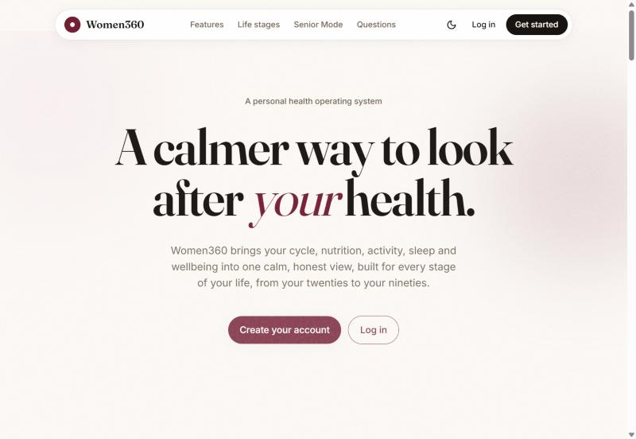
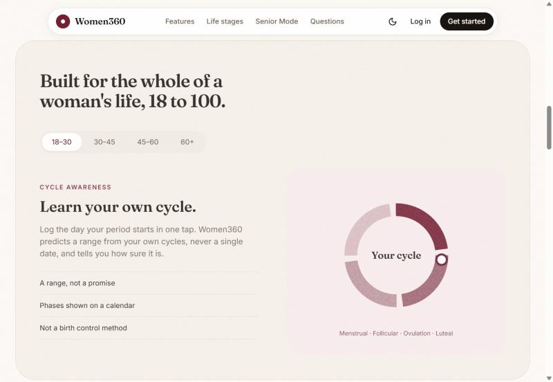
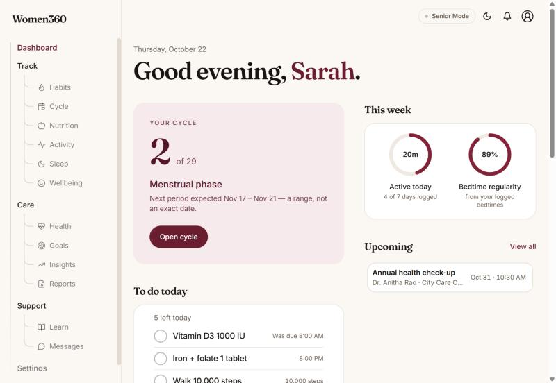
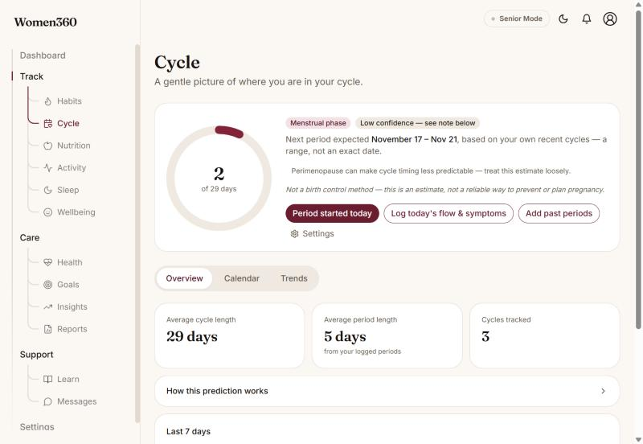
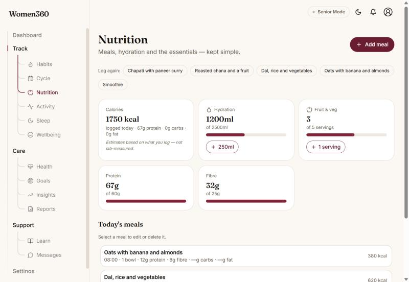
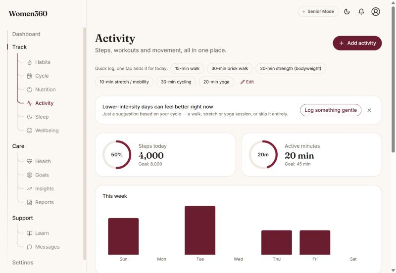
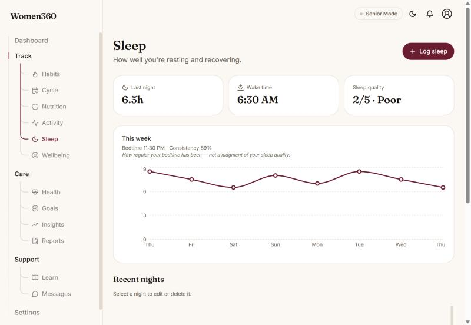
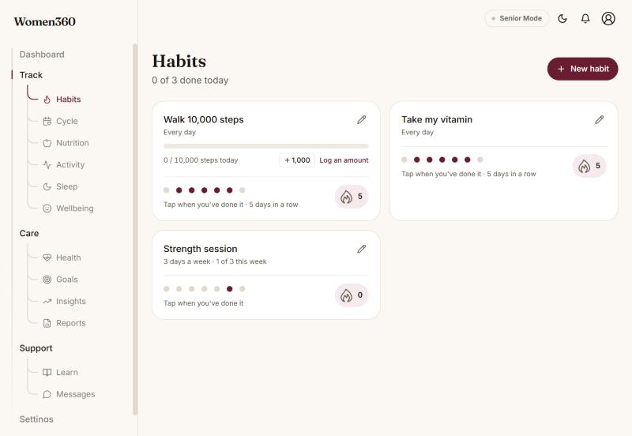
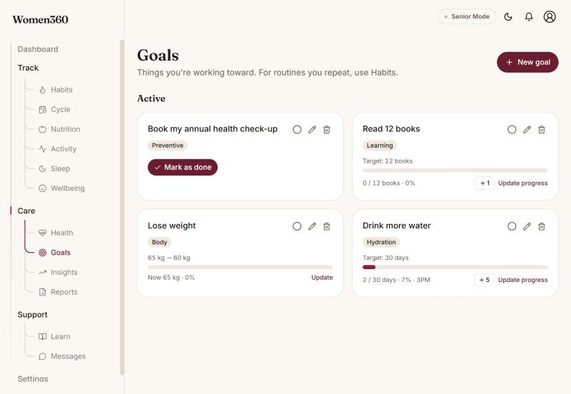
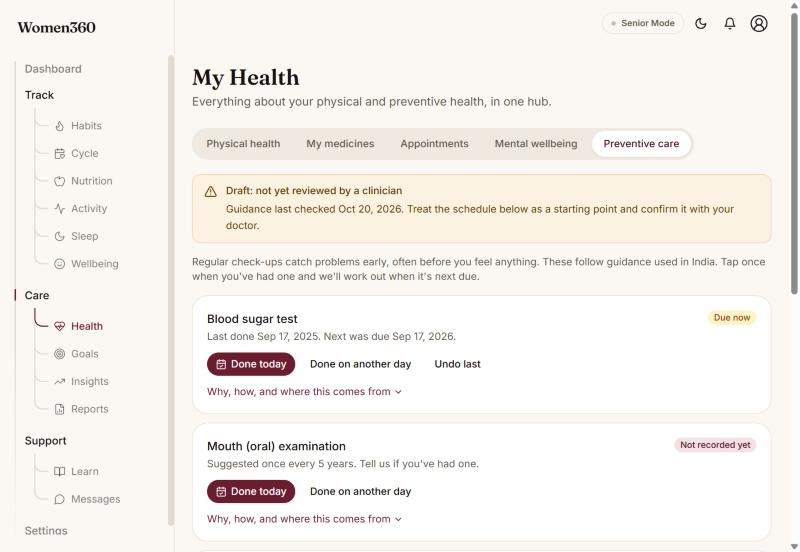
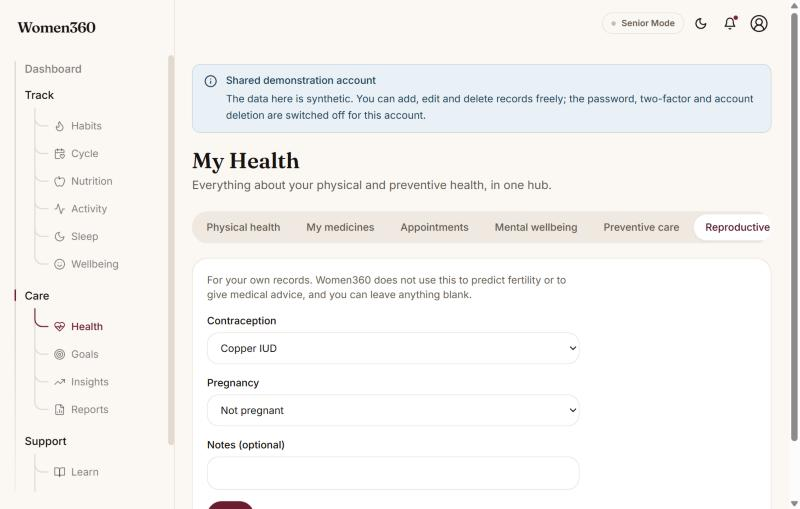
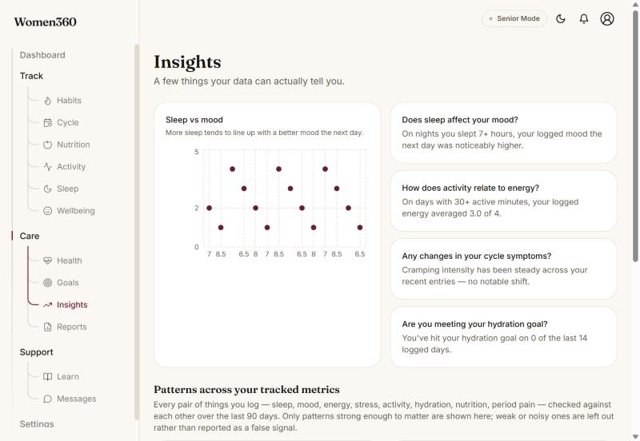
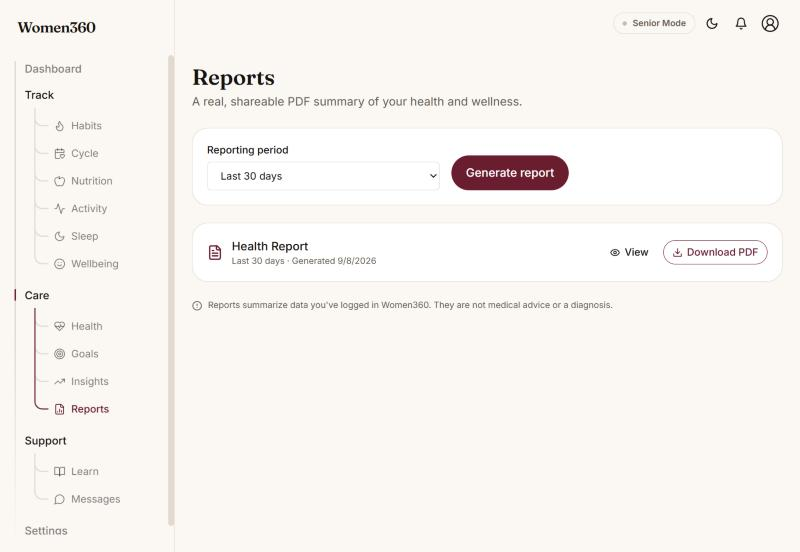
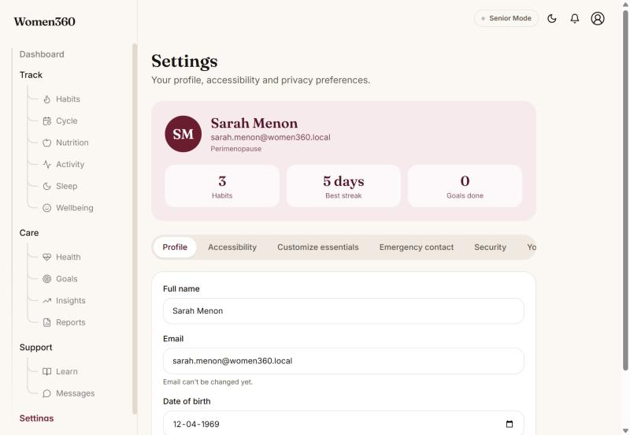
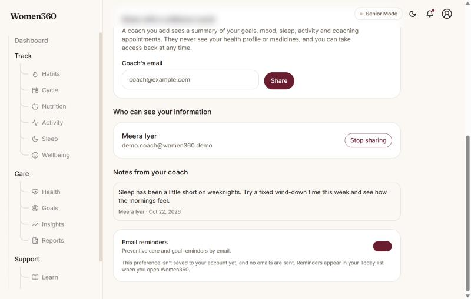
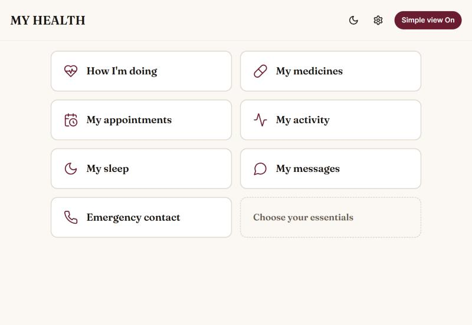
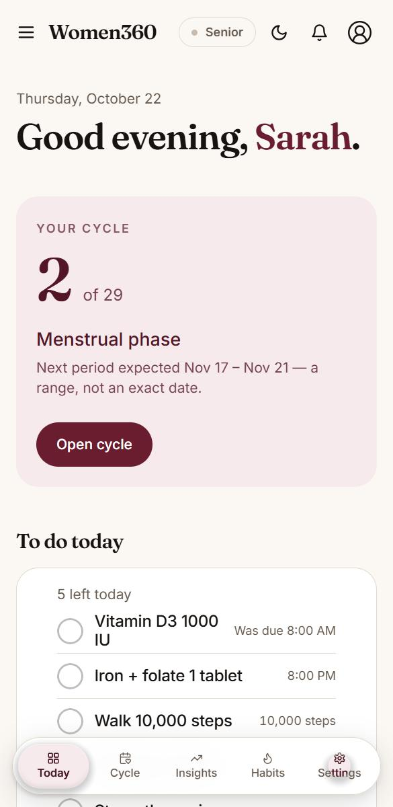
Administrators and coaches do not use the woman's sidebar or Senior Mode. Each gets a plain header and one working page, reached automatically when signing in. The screenshots below show the shared demonstration accounts: the demonstration administrator is read-only and sees only demonstration accounts.
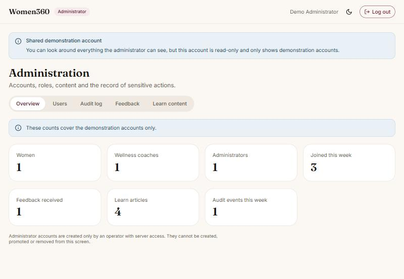
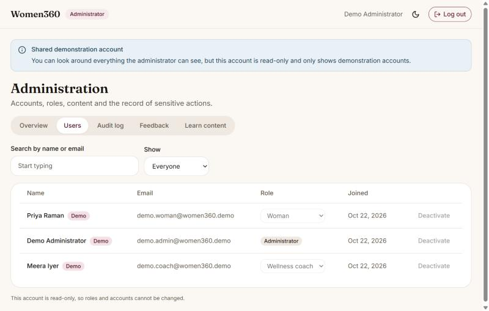
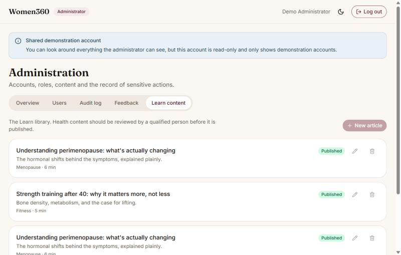
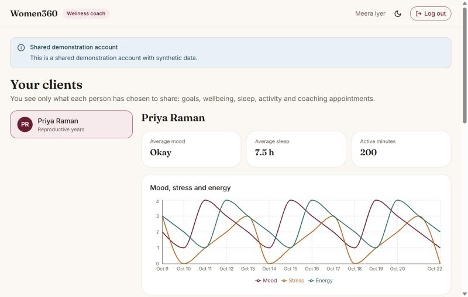
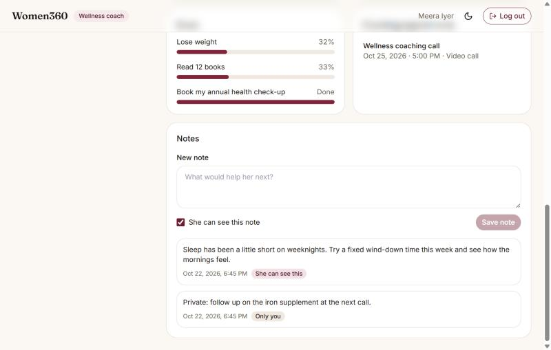
| Area | Technology |
|---|---|
| Front end | React 18, TypeScript, Vite 5, Tailwind CSS 3, React Router, Recharts, GSAP (scroll reveals), jsPDF (report PDF) |
| Back end | Node.js 20, Express 4, TypeScript, zod validation, Helmet, CORS, rate limiting, Argon2, JSON Web Tokens |
| Database | PostgreSQL (Supabase), Prisma 5 ORM and migrations |
| Testing and quality | Vitest, Supertest, ESLint, strict TypeScript, GitHub Actions |
| Cloud | Vercel, Render, Supabase, GitHub; Capacitor for the optional Android wrapper |
All endpoints live under /api/v1. Responses use one envelope: { "ok": true, "data": ... } or { "ok": false, "error": { "code", "message" } }. Validation failures return 422, missing or invalid tokens 401, ownership or role violations 403, unknown records 404, and rate-limited requests 429.
| Module | Representative endpoints |
|---|---|
| Auth | POST /auth/register, /auth/login, /auth/refresh, /auth/logout, /auth/delete-account |
| Users | GET/PATCH /users/me, /users/me/export, /users/me/health-profile, /users/me/reproductive-health, /users/me/emergency-contact |
| Cycle | GET /cycle/summary, PUT/DELETE /cycle/entries/:date, PUT /cycle/profile |
| Nutrition | GET/POST /nutrition/meals, POST /nutrition/hydration, GET /nutrition/recent-meals |
| Activity | GET /activity/summary, POST/PATCH/DELETE /activity/entries, GET/POST/DELETE /activity/quick-log |
| Goals and habits | GET/POST/PATCH/DELETE /goals, /habits, PUT/DELETE /habits/:id/logs/:date |
| Screening | GET /screening, POST /screening/:id/records, DELETE /screening/:id/records/:recordId |
| Insights and reports | GET /insights, /insights/cycle-delay, /insights/low-mood, POST /reports |
| Coach and admin | GET /coach/assigned-women, /coach/women/:id/summary, POST/DELETE /coach/sharing, GET /admin/overview, /admin/users, PATCH /admin/users/:id/role, GET /admin/audit-log |
prisma migrate deploy, so a push that changes the schema also updates the cloud database.npm run seed:demo, which (only when SEED_DEMO_ACCOUNTS=true) creates the three shared logins and refreshes the demonstration woman's synthetic data. A failure there never blocks a deploy.GET /health is used by Render and by the deployment test.The server has {{serverTests}} and the front end {{frontendTests}}, all passing when run on {{testRunDate}}. Server tests are integration tests: Supertest sends real HTTP requests to the application backed by a real PostgreSQL test database (not mocks), so authentication, validation, ownership checks and SQL are exercised together.
| Area | Tests | What is covered |
|---|---|---|
| Authentication and security | 73 | Lockout and rate limits, password policy, token issue and expiry, sign out everywhere, two-factor (TOTP, backup codes), admin guards. |
| Roles, demonstration accounts and privacy | 30 | Coach assignment, sharing and revoking, a coach seeing only women who shared, private versus visible notes, administrator overview, the read-only demonstration administrator, demonstration accounts unable to lock others out, cross-user access refused (403), data export contains no credentials, account deletion requires the password. |
| Cycle and insights | 56 | Regular, irregular and perimenopausal cycles; thin-data handling; baseline-deviation detection; pregnancy prompt suppressed after menopause; correlations. |
| Tracking modules | 88 | Nutrition totals and decimals, sleep, activity and quick log, medicines and adherence, goals by kind, habits and streaks, backfilled days, reproductive-health records. |
| Preventive care | 18 | Age ranges, due and up-to-date logic, month-end dates, "not recorded" never reported as overdue, ownership. |
| Validation and misc. | 23 | Rejected malformed input, response envelope, app and database-URL guards. |
| Front end units | 32 | Sleep duration across midnight, 12/24-hour conversion, decimal checks, goal progress, quick-step sizing, where each role lands after sign-in. |
| # | Scenario | Expected | Result |
|---|---|---|---|
| T1 | Register with a password that contains the person's name | Rejected with a validation error | Pass |
| T2 | Five wrong sign-ins for one account, then the correct password | Account locked; the correct password is also refused until the lockout ends | Pass |
| T3 | User B reads or deletes user A's cycle entries | Refused; A's records unchanged | Pass |
| T4 | Call a protected route with no token | 401 | Pass |
| T5 | Admin endpoint with the optional IP allow-list set, request from another address | Blocked before authentication is even attempted | Pass |
| T6 | Highly variable cycle history | Low confidence and an irregularity note, shown as a range | Pass |
| T7 | Log a screening twice for the same day | One record, no duplicates | Pass |
| T8 | Export my data | Own data only, never credentials or another person's data | Pass |
| T9 | Delete account with the wrong password | Refused; account intact | Pass |
| T10 | Fix a missed habit day | That day marked done; today unchanged | Pass |
| T11 | Demonstration administrator changes a role, deletes a user or edits an article | 403; nothing changes; reads still work | Pass |
| T12 | Demonstration account changes its password or deletes itself | 403; the shared login keeps working | Pass |
| T13 | A woman revokes a coach's access | The coach's next request for her summary is refused (403) | Pass |
GET /health returned {"ok":true,"data":{"status":"healthy"}} (about 22 s on a cold start); newly added endpoints answered 401 without a token, which shows they are deployed and protected.render.yaml (root directory server, Singapore region, free plan, health check /health). Set DATABASE_URL, JWT_ACCESS_SECRET, JWT_REFRESH_SECRET and CORS_ORIGINS (the blueprint also sets SEED_DEMO_ACCOUNTS). The build installs dependencies, generates the Prisma client, compiles TypeScript, runs prisma migrate deploy and then creates the demonstration logins.VITE_API_BASE_URL to the API's /api/v1 URL. vercel.json adds the SPA rewrite and security headers.CORS_ORIGINS on Render so the browser may call the API./health, register an account on the live site, and log a record.main deploys both services; schema changes migrate the database on the same deploy.The step-by-step guide is DEPLOYMENT.md in the repository.
| ID | Acceptance criterion | Status | Evidence |
|---|---|---|---|
| AC-01 | A user can register and log in | Met | Live site; automated tests. |
| AC-02 | Role-based access demonstrable for Woman, Coach and Admin | Met | Three demonstration logins (Section 21), each landing in its own area; enforced and tested on the API (Figures 20 to 24). |
| AC-03 | Core records support CRUD | Met | Tracking modules, with tests. |
| AC-04 | Dashboard with meaningful data and trends | Met | Figures 5 and 14. |
| AC-05 | Reports from recorded data | Met | PDF export (Figure 15). |
| AC-06 | REST APIs implemented and used | Met | About 110 endpoints used by the front end. |
| AC-07 | Cloud database stores the data | Met | Supabase PostgreSQL. |
| AC-08 | Responsive application | Met | Figures 5 and 19. |
| AC-09 | Deployed to a public cloud URL | Met | {{liveUrl}} |
| AC-10 | Source in a GitHub repository | Met | {{githubUrl}} |
npm install and npm run dev in the repository root for the front end; in server/: npm install, copy .env.example to .env, npx prisma migrate deploy, npm run dev. Tests: npm test in each folder. The demo seed refuses to run against a non-local database.
Server: NODE_ENV, DATABASE_URL, JWT_ACCESS_SECRET, JWT_REFRESH_SECRET, JWT_ACCESS_TTL, JWT_REFRESH_TTL, CORS_ORIGINS, SEED_DEMO_ACCOUNTS, SUPPORT_EMAIL, optional TWO_FACTOR_ENCRYPTION_KEY, ADMIN_IP_ALLOWLIST. Front end: VITE_API_BASE_URL.
init · meal/sleep notes and goal progress · sleep quality scale and nutrition decimals · medication adherence · cycle context tags · auth hardening · two-factor · goal check-ins and feedback · health profile medicines · habits and goal kinds · screening records · activity quick log · demo flag and reproductive health.
| Live Application URL | {{liveUrl}} |
|---|---|
| Test User (woman) Username / Login | {{testUser}} |
| Test User Password | {{testUserPassword}} |
| Wellness Coach Username / Login | {{coachUser}} |
| Wellness Coach Password | {{coachPassword}} |
| Admin Username / Login | {{adminUser}} |
| Admin Password | {{adminPassword}} |
| Login | After signing in |
|---|---|
| Test user | The woman's application at /app with a month of synthetic data (cycle, nutrition, activity, sleep, wellbeing, goals, habits, medicines, check-ups). Records can be added, edited and deleted freely. Settings, Privacy & sharing shows the demonstration coach already has access. |
| Wellness coach | The coach area at /coach: the demonstration woman's shared summary and notes. Notes can be added. |
| Admin | The administrator area at /admin: overview, users, audit log, feedback and Learn content. This is a read-only demonstration administrator that sees only the three demonstration accounts, so nothing can be changed or deleted. |
For safety the demonstration accounts cannot change their password, delete themselves, turn on two-factor or sign out everywhere, so the logins stay valid for every evaluator. Full administrator accounts exist only for the operator and are created from the command line.